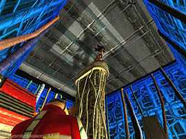
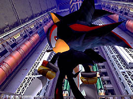

| ソニックアドベンチャー２ | |
| １０月１日号 | |
| 秋祭り特別公開 ９日目[謎のハリネズミ] | |
| Ｄｒ．エッグマンの前に姿を現した謎の黒いハリネズミ。 ソニックと同じシルエットをもつこの黒いハリネズミの正体とは！？ 「ソニックアドベンチャー２」の物語は、この謎のハリネズミの登場によって、その幕を開ける。 | |
|  |  |
| エッグマンの前に現れた謎のハリネズミ！ | 彼の正体は？ そして目的は！？ |
| ←これまでの情報 | |
| (c) Sonicteam, Ltd. 2000 | |
| このページは、ソニックチームＵＳＡがサンフランシスコよりお送りしています。 | |